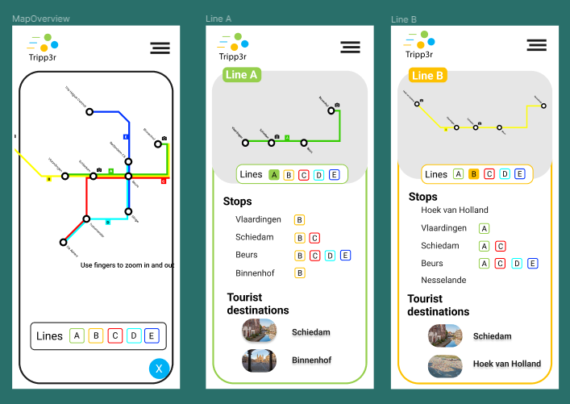

01
travel planner hi-fi prototype
- designer
- ui/ux
- 1 week
This assignment was to create an interactive, high fidelity prototype of the previously made wireframes. It was important that the prototype’s look would conform to the identity of the company. This for me, mostly meant that I would stick to the colours and shapes to the company’s logo.
The plan, while transforming the wireframes into a hi-fi prototype, was to use the company’s colours wisely, and to keep the simple and clean look. I chose to keep a white background and add colours to smaller, yet important buttons and other things. Only the search bar is green, indicating a visual hierarchy, besides, the map overview is blue, indicating that it might be something important for the user as well.
My mission as a ux designer in this case, was to create something familiar, clear and easy-to use product, that limits steps and distraction and is straight-to-the point. I made it to have a more minimalistic look and present and serve to live up to the expected functionalities and wualities of a travel planner.
I have chosen to incorporate the lines’ colours in the screen of the line overview, making it easier for the user to differentiate between the lines based on the colours. By giving each line a respective border colour, I had the same idea in mind: portray a better and easier overview of the things, making things possibly easier to remember, while keeping a realatively clean and less overwhelming look.
Takeaways
designed a wireframe from scratch
developed a hi-fi prototype based on the wireframe
insight and knowledge regarding prototyping
familiarity with testing prototypes
practice with creating a good user experience
Through the planning the wireframe got mostly positive feedbacks. The product felt clean and easy-to use.